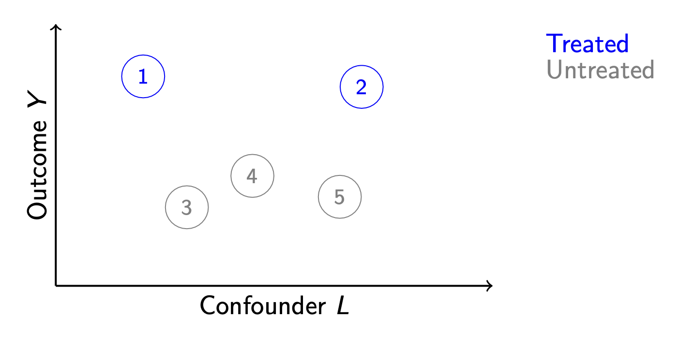
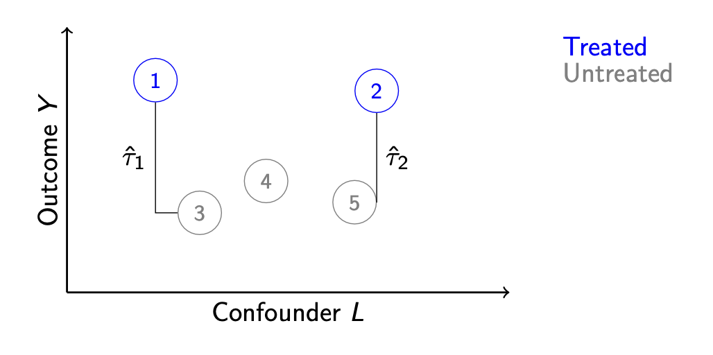
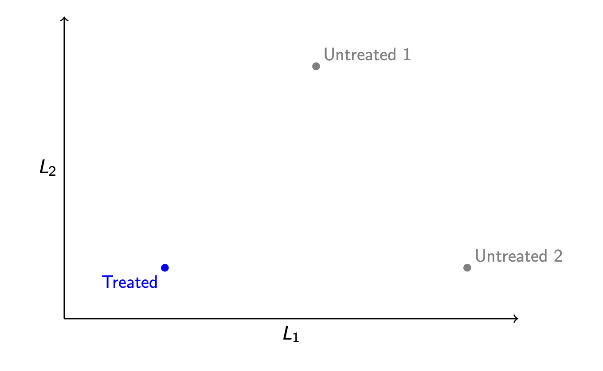
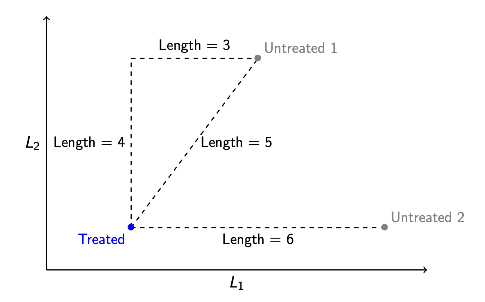
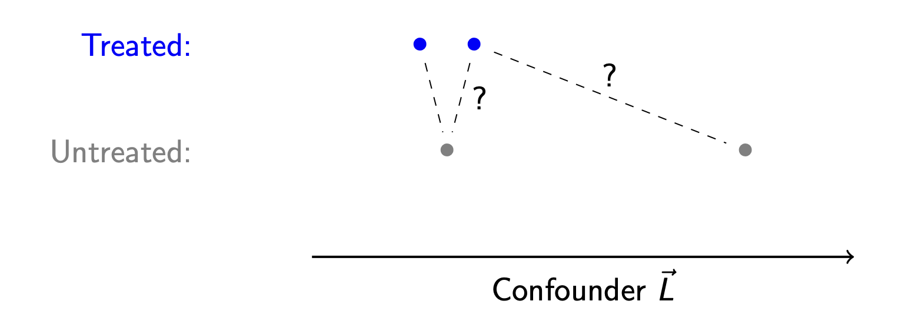
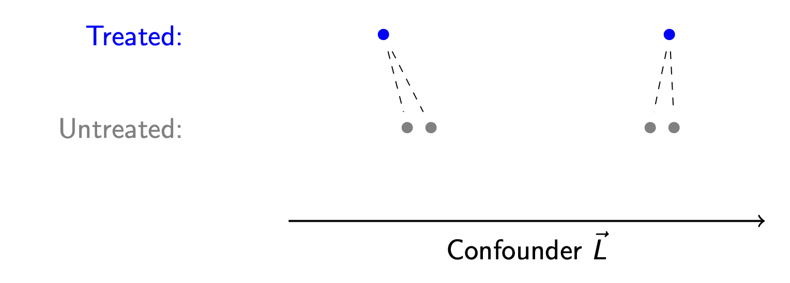

library(tidyverse)
library(MatchIt)Matching
Here are slides on matching.
Matching is a method for causal inference that is analogous to model-based estimation, but is often easier to explain. Suppose we have a set of 5 units, of whom 2 are treated.

We would like to infer that treatment causes higher outcomes, but the units also differ along a confounding variable \(L\). How can we infer the average treatment effect for units 1 and 2?
One way to draw inference is by a model: model \(Y^0\) as a function of \(L\) among the untreated units, and then use our model to predict for the treated units.
Another strategy might involve no model at all. We notice that unit 3 is very similar to unit 1 along \(L\). Likewise, unit 2 is very similar to unit 5. We could match these units together and use the matches to infer the unobserved potential outcomes.

We then estimate the average effect for units 1 and 2 by the difference of
- The average outcome among treated units: \(\frac{1}{2}(Y_1 + Y_2)\) and
- The average outcome among matched controls: \(\frac{1}{2}(Y_3 + Y_5)\)
Matching in math
Formally, let \(\text{match}(i)\) denote the index of the match for unit \(i\). Our goal is to estimate the average treatment effect on the treated,
\[\tau = \frac{1}{n_1}\sum_{i:A_i=1}\left(Y_i^1 - Y_i^0\right)\]
where \(n_1\) is the number of treated units and the sum is taken over all units \(i\) such that the treatment took the value 1 for those units.
The fundamental problem of causal inference is that for these units \(Y_i^1\) is observed but \(Y_i^0\) is not. But for each treated unit \(i\), we find an untreated match \(j = \text{match}(i)\) who is very simialr to \(i\) but for whom \(Y_j^0\) is observed. We then estimate by the mean difference between the treated units and their matched controls.
\[\hat\tau_\text{Matching} = \frac{1}{n_1}\sum_{i:A_i=1}\left(Y_i^1 - Y_{\text{match}(i)}^0\right)\]
Matching vs. regression
Why should we prefer matching or regression?
We have already learned a regression solution to this problem: assume a sufficient adjustment set \(\vec{X}\), model the \(Y_i^0\) outcomes as a function of \(\vec{X}\) for a set of units who factually were untreated, and use the model to predict what would happen for the treated units if they had been untreated \((\hat{Y}_i^0)\). Then our estimator of the ATT would be:
\[\hat\tau_\text{Regression} = \frac{1}{n_1}\sum_{i:A_i=1}\left(Y_i^1 - \hat{\text{E}}(Y\mid\vec{X} = \vec{x}_i, A = 0)\right)\]
Matching is actually doing the same thing—we are just using the outcome of unit \(j\) as an estimator of \(\hat{\text{E}}(Y\mid\vec{X} = \vec{x}_i, A = 0)\).
Why would we then prefer matching? One reason is explainability. A model is easy to explain to social scientists and statisticians who are familiar with models. It isn’t as good when you are speaking to policymakers and others who are unfamiliar with models.
Distances for multivariate matching
Suppose we have treated and untreated units that differ along two confounding variables, \(L_1\) and \(L_2\).

Which control unit should be chosen as the match? With more than one variable, it is not immediately obvious which control points is “closest” to the treated point—we first need to define “closest.” Which one we would choose requires one to choose a distance metric.
Distance metric. A function \(d()\) that takes two vectors \(\vec{x}\) and \(\vec{x}'\) and returns a scalar numeric distance \(d(\vec{x},\vec{x}')\).

Manhattan distance
Imagine that the points are places in Manhattan, where the streets are arranged in a grid. The way to travel from Treated to Untreated 1 is by traveling 4 blocks north and then 3 blocks east, for a total distance of 7 units. This distance metric is called Manhattan distance.
Manhattan distance. The distance between two vectors \(\vec{x}\) and \(\vec{x}'\) is the sum of their absolute differences on each element: \[d_\text{Manhattan}(\vec{x},\vec{x}') = \sum_p \lvert x_p - x'_p \rvert \]
By Manhattan distance, we might determine that the unit (Untreated 2) is closest to (Treated) because its Manhattan distance from the treated unit is 6 instead of 7.
Euclidean distance
Imagine instead that the points are in a field, and you are a crow. The distance that is relevant to you is the most direct line—the distance as the crow flies! This is Euclidean distance.
Euclidean distance. The distance between two vectors \(\vec{x}\) and \(\vec{x}'\) is the square root of the sum of their squared differences on each element: \[d_\text{Euclidean}(\vec{x},\vec{x}') = \sqrt{\sum_p \left( x_p - x'_p \right)^2} \]
By Euclidean distance, we would choose a different matched control unit! The unit (Untreated 2) is 6 units away from the (Treated) unit in terms of Euclidean distance, and the unit (Untreated 1) is only 5 units away. By Euclidean distance, the match to choose is (Untreated 1).
The comparison between Euclidean and Manhattan distances shows that our choice of distance metric can shape who we choose as matches.
In practice, neither Manhattan nor Euclidean distance is commonly used for matching. Instead, researchers often use Mahalanobis distance, which is a generalization of Euclidean distance that takes into account the variance and covariance of \(\vec{X}\). And an even more common distance metric is propensity score distance, which we discuss next.
Propensity score distance
A distance metric requires us to map a pair of vectors \((\vec{x},\vec{x}')\) into a single-number distance. Thankfully, there is already a way we often map a vector of confounders to a number: predict the probability of treatment.
Suppose we estimate each unit’s probability of being treated, \(\text{P}(A = 1\mid \vec{X} = \vec{x}_i)\). We might then define the distance between two units as the distance between their predicted probabilities of being treated.
Propensity score distance. The distance between two vectors \(\vec{x}\) and \(\vec{x}'\) is the squared difference in the probability of treatment under these two vectors. \[d_\text{PropensityScore}(\vec{x},\vec{x}') = \left(\text{P}(A = 1\mid \vec{X} = \vec{x}) - \text{P}(A = 1\mid \vec{X} = \vec{x}')\right)^2\]
Often, the propensity score \(\text{P}(A = 1\mid \vec{X})\) is estimated by a logistic regression model, but one could estimate by any machine learning strategy or nonparametrically if \(\vec{X}\) is discrete.
Propensity score matching is especially intuitive. With propensity score matching, the researcher matches each treated unit to a control unit who had a similar probability of being treated.
Choices after the distance
After you define the distance, there are many additional choices for how to conduct matching! These choices often involve a tradeoff between bias and variance.
With and without replacement
Below are two treated and two untreated units who differ on one confounding variable \(L\). The left-most treated unit is matched to the left-most control unit. The algorithm then moves to the right-most treated unit: which control unit should serve as its match?

One argument is that the left-most control unit should again serve as the match—it is clearly the closest control unit. But it has already been used! If we want to enforce that each treated unit gets its own unique untreated match, then we should match to the unit at the right.
This is the choice between matching with and without replacement.
- With replacement: After an untreated unit is used as a match for one treated unit, it is returned to the pool of untreated units to be considered for future matches.
- Without replacement: After an untreated unit is used as a match for one treated unit, it is never again used as a match.
Matching with replacement yields the closest possible matches: each treated unit gets paired with the closest control unit that can be found. In this sense, matching with replacement reduces bias.
But matching with replacement can also produce a high-variance estimator. Suppose you have 50 treated units who all get matched to a single untreated unit—the random chance that included that particular untreated unit in the sample has huge influence on the resulting estimate!
The choice of with and without replacement has no correct answer; whether one or the other is better will depend on the bias and variance in a particular research setting.
k:1 matching
Should each treated unit be matched to only one untreated unit, or should we match to more than one untreated unit and take the average? A k:1 matching algorithm matches each treated unit to \(k\) untreated units.

The advantage of k:1 matching is a reduction in variance: by averaging over a larger number of untreated units, the resulting estimator will vary less from sample to sample. But the cost of k:1 matching bias: the two closest matches are not generally going to be collectively as close to the treated unit as the single closest match.
Calipers
Suppose we have a treated unit, and there seem to be no comparable control units. Is there a point at which we give up the search?

In our illustration, the treated point at the far right is very far from both untreated units. It is not clear that we should try to match this unit. To formalize that it is too far, we might define the black bars as the farthest distance we are willing to look for a match. The width of these bars is known as a caliper.
Caliper. The maximum distance between a treated and untreated unit such that we will consider them possible matches.
In caliper matching, we would not match the right-most treated unit to any untreated unit. Instead, we would update the estimand to be the average treatment effect on the treated among those within the caliper distance from the control units.
Caliper matching can be good because it avoids bad matches. But caliper matching comes with a cost—it changes the causal estimand to the causal effect in a subgroup who can be hard to explain!
Regression after matching
After matching, there are two estimators we could consider.
- Mean \(Y\) among treated units - mean \(Y\) of matched control units
- Coefficient on \(A\) in a regression of \(Y\) on \(A\) and \(\vec{X}\) among matches
Estimator (2) is preferable in the sense that the regression model can correct for imperfections in our matching. Despite our best efforts, the matched controls will not be quite equal to the treated units along \(\vec{X}\)! Regression can fix this. In this sense, we can think of matching as a preprocessing step before regression.
Matching in code
The MatchIt package in R carries out all kinds of matching applications. You can do all of the above using MatchIt.
Here is one example, using our data from the model-based inference page.
data <- read_csv("https://soc114.github.io/data/nlsy97_simulated.csv")matched <- matchit(
# A formula for treatment given confounders.
# Treatment must be a binary or logical variable.
formula = (a == "treated") ~ sex + race + mom_educ + dad_educ +
log_parent_income + log_parent_wealth + test_percentile,
# Data containing variables
data = data,
# Conduct propensity score matching
distance = "glm",
link = "logit",
estimand = "ATT"
) |> print()A `matchit` object
- method: 1:1 nearest neighbor matching without replacement
- distance: Propensity score
- estimated with logistic regression
- number of obs.: 7688 (original), 2958 (matched)
- target estimand: ATT
- covariates: sex, race, mom_educ, dad_educ, log_parent_income, log_parent_wealth, test_percentileWe see that this carried out 1:1 nearest neighbor matching without replacement, with distance estimated by the propensity score estimated with logistic regression. We can extract the resulting matches with the match.data() function.
matches <- match.data(matched)Then we can estimate by the mean difference across matched treated and control units. In the event of matching with replacement or k:1 matching, it is important to include weights since each unit may be used as a match multiple times.
matches |>
group_by(a) |>
summarize(estimate = weighted.mean(y, w = weights))# A tibble: 2 × 2
a estimate
<chr> <dbl>
1 treated 0.518
2 untreated 0.254Alternatively, we can carry out regression after matching.
lm_after_matching <- lm(
y ~ (a == "treated") + sex + race + mom_educ + dad_educ +
log_parent_income + log_parent_wealth + test_percentile,
data = matches,
weights = weights
)Then our estimate could be the coefficient on the treatment variable.
summary(lm_after_matching)
Call:
lm(formula = y ~ (a == "treated") + sex + race + mom_educ + dad_educ +
log_parent_income + log_parent_wealth + test_percentile,
data = matches, weights = weights)
Residuals:
Min 1Q Median 3Q Max
-0.7731 -0.3592 -0.1666 0.4412 1.2364
Coefficients:
Estimate Std. Error t value Pr(>|t|)
(Intercept) -0.1667709 0.0904700 -1.843 0.06537 .
a == "treated"TRUE 0.2350511 0.0169415 13.874 < 2e-16 ***
sexMale 0.1119653 0.0170433 6.569 5.95e-11 ***
raceNon-Hispanic Black -0.1501000 0.0341049 -4.401 1.12e-05 ***
raceNon-Hispanic Non-Black -0.0232965 0.0275414 -0.846 0.39769
mom_educCollege -0.0421786 0.0442361 -0.953 0.34042
mom_educHigh school -0.1016445 0.0422265 -2.407 0.01614 *
mom_educNo mom -0.1125961 0.0654962 -1.719 0.08570 .
mom_educSome college -0.0691847 0.0427370 -1.619 0.10559
dad_educCollege 0.0872352 0.0451752 1.931 0.05357 .
dad_educHigh school 0.0010773 0.0448006 0.024 0.98082
dad_educNo dad 0.0713750 0.0452732 1.577 0.11501
dad_educSome college 0.0662214 0.0449126 1.474 0.14047
log_parent_income 0.0058689 0.0063126 0.930 0.35260
log_parent_wealth 0.0155895 0.0049802 3.130 0.00176 **
test_percentile 0.0029745 0.0004176 7.122 1.33e-12 ***
---
Signif. codes: 0 '***' 0.001 '**' 0.01 '*' 0.05 '.' 0.1 ' ' 1
Residual standard error: 0.4505 on 2942 degrees of freedom
Multiple R-squared: 0.1482, Adjusted R-squared: 0.1438
F-statistic: 34.11 on 15 and 2942 DF, p-value: < 2.2e-16Using the regression-after-matching strategy, we estimate that going to college leads to a 0.24 increase in the probability of having a college-educated spouse or residential partner.
What to read
To learn more about matching, a good article is:
- Stuart, Elizabeth. 2010. “Matching Methods for Causal Inference: A Review and a Look Forward.”. Statistical Science 25(1):1-21.
To see how matching methods have been used in questions of social stratification, see this book and papers cited in it.
- Brand, Jennie E. 2023. Overcoming the Odds: The Benefits of Completing College for Unlikely Graduates. Russell Sage Foundation. Here is a link to read online through the UCLA Library.